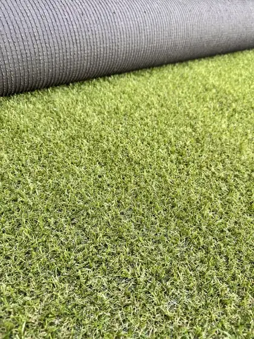
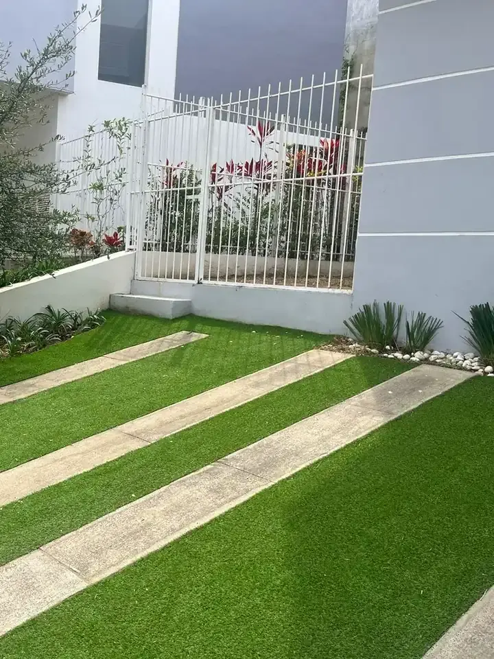
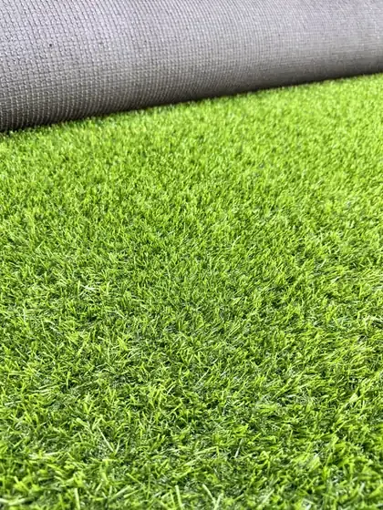

18mmPara llevar hoy · Cd. MaderoSintético · 02/09El más económico
Toscana 18
Rollo de 50 m² · desde$149/m²
Envíopor rollo, según estado
950 g/m² · garantía 5 años
Inicio › Pasto sintético › Toscana 28

28mmPasto sintético · 05 de 09 · El más vendido
Se ve frondoso, aguanta a la familia entera y no cuesta como un pasto de 35 mm.
En existencia · envío a todo México en 3 a 5 días hábilesPara llevar hoy del showroom de Cd. Madero
Sintético · 05/09Con IVA
Toscana 28
*Cortes de 2 a 9 m² solo en el showroom. Envío nacional desde 25 m², cobrado por rollo según tu estado.
Material · IVA incluido
$9,950
Mensualidades con tarjeta de crédito: tu banco debe aceptar el plan. Te confirmamos el flete exacto con tu código postal y el total antes de enviarte el link de pago.
01Ficha técnica
Jardines familiares de uso diario, niños y mascotas, terrazas, patios y áreas de alberca.
02¿Cuál me conviene?
Para lucir, Toscana 28. Para uso muy intenso, Irlanda 25. Para gastar menos en áreas de poco uso, Toscana 18. Agrega los que quieras: van todos en un solo mensaje.

18mmPara llevar hoy · Cd. MaderoSintético · 02/09El más económico
Envíopor rollo, según estado
950 g/m² · garantía 5 años
 28mmPara llevar hoy · Cd. Madero
28mmPara llevar hoy · Cd. Madero1,380 g/m² · garantía 5 años

25mmEn existencia · envío nacionalSintético · 04/09Fibra más resistente
Envíopor rollo, según estado
1,400 g/m² · garantía 8 años
03Envío y cómo comprar
Un rollo son 50 m². Si pides 100 m² son dos rollos y dos fletes. Con tu código postal te damos el precio final antes de pagar.
$900 /rollo
Centro y Occidente. CDMX, Estado de México, Jalisco, Puebla, Querétaro, San Luis Potosí y más.
$1,150 /rollo
Norte, Golfo y Sur. Tamaulipas, Nuevo León, Coahuila, Veracruz, Oaxaca, Sinaloa y más.
$1,400 /rollo
Sureste y fronteras. Yucatán, Quintana Roo, Chiapas, Sonora, Chihuahua, Baja California y más.
Pon tus m² y tu estado, y manda la cotización por WhatsApp.
Con tu código postal te damos el precio final.
Transferencia o link de pago con tarjeta. Factura CFDI 4.0.
Por paquetería, con guía de rastreo y guía de instalación.
04Preguntas
$199/m² en rollo completo de 50 m², $229/m² de 10 a 49 m² y $279/m² en cortes de 2 a 9 m² en el showroom de Cd. Madero. Con IVA. El envío se cobra por rollo según tu estado: $900, $1,150 o $1,400.
El mínimo para envío nacional es 25 m². En el showroom vendemos desde 2 m² y te lo llevas hoy. Por paquetería llega en 3 a 5 días hábiles después de confirmar el pago.
Sí. Fibra suave de polietileno, tratamiento antibacterial y retardante al fuego. Con mascotas conviene enjuagar con agua una o dos veces por semana las zonas de más uso.
Sí. Sobre tierra compactada se fija con clavos cada 20 a 30 cm; sobre concreto se pega con adhesivo de contacto. Te mandamos la guía de instalación con el pedido.
Sí, dentro de 7 días naturales, nuevo, sin cortar y en su empaque. Los cortes a medida no tienen devolución. El envío de regreso y un cargo de reposición del 10% corren por cuenta del cliente. Detalle en Políticas.